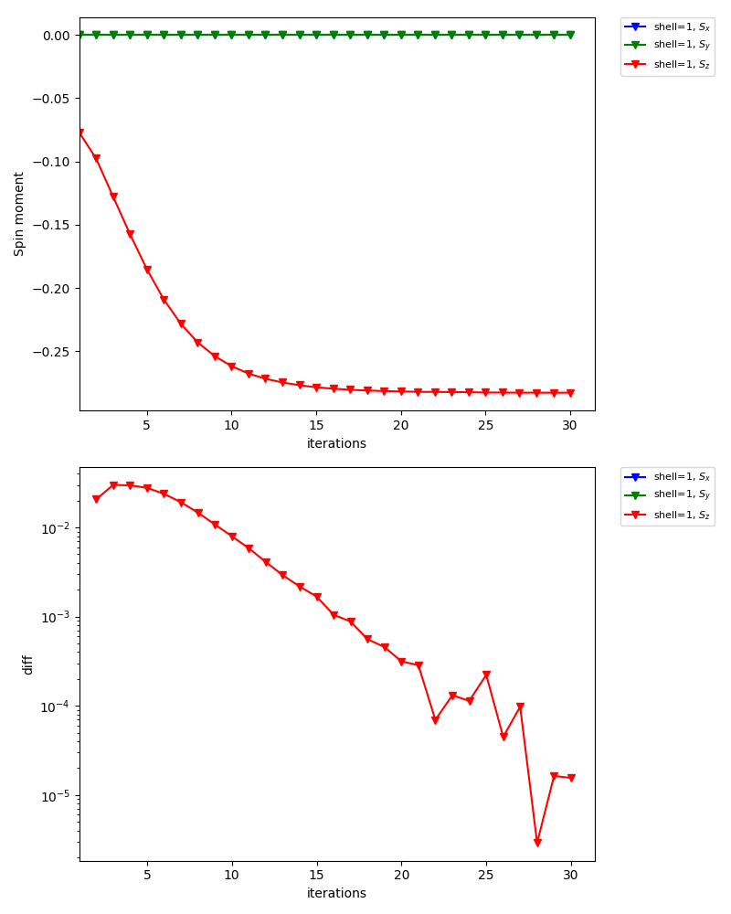

Antiferromagnetic state¶
In this tutorial, you will learn the following:
How to define a lattice model using the Wannier90 interface
How to calculate antiferromagnetic states
How to set an initial guess for the self-energy
As a particular example, we consider the Hubbard model on a square lattice (The first example: 2D Hubbard model). Within the single-site DMFT approximation, the model shows an antiferromagnetic transition at low temperature (the Mermin-Wagner theorem is not fulfilled in DMFT). The transition temperature was estimated as \(T_\mathrm{c}/t\simeq 0.23\) for \(U=4\). This means that the parameter set used in [The first example: 2D Hubbard model] is actually in the antiferromagnetic phase. In this tutorial, we compute the antiferromagetic solution below \(T_\mathrm{c}\) using a CT-HYB solver.
The complete input file is shown below:
[model]
seedname = afm_dim2
lattice = wannier90
ncor = 4
norb = 1, 1
nelec = 4.0
kanamori = [(4.0, 0.0, 0.0), (4.0, 0.0, 0.0)]
corr_to_inequiv = 0, 1, 1, 0
nk = 8
[system]
T = 0.1
n_iw = 1000
mu = 2.0
fix_mu = True
[impurity_solver]
name = ALPS/cthyb-seg
exec_path{str} = /path/to/alps_cthyb
cthyb.TEXT_OUTPUT{int} = 1
cthyb.MEASUREMENT_freq{int} = 1
MEASURE_gw{int} = 1
MAX_TIME{int} = 60
cthyb.N_MEAS{int} = 50
cthyb.THERMALIZATION{int} = 100000
cthyb.SWEEPS{int} = 100000000
[control]
max_step = 30
sigma_mix = 0.5
initial_static_self_energy = {0: 'init_se_up.txt', 1: 'init_se_down.txt'}
[tool]
broadening = 0.0
knode = [(G,0.0,0.0,0.0),(X,0.5,0.0,0.0),(M,0.5,0.5,0.0),(G,0.0,0.0,0.0)]
# knode = [(G,0,0,0),(X,1,0,0),(M,1,1,0),(G,0,0,0)]
nk_line = 100
omega_max = 6.0
omega_min = -6.0
Nomega = 401
Note that /path/to/alps_cthyb for [impurity_solver] exec_path{str} parameter needs to be replaced with a full path to alps_cthyb executable in your environment.
Define lattice model¶
First, we define the hopping matrix of the 2D Hubbard model with a 2x2 unit cell.
Running the script mk_hr_2.py as
python mk_hr_2.py
a text file in the Wannier90 format is generated (afm_dim2_hr.dat).
The unit cell contains four sites whose internal coordinates are (0, 0), (0, 1), (1, 0), (1, 1).
We now assume an antiferromagnetic order characterized by the wave vector \(q=(\pi, \pi)\).
To this end, we assign the four sites (correlated shells) to two inequivalent shells by using the corr_to_inequiv parameter in the model section.
Generate initial guess for self-energy¶
Second, we set up intial guesses for the (static) self-energies on the two inequivalent shells.
For one shell, we use the text file init_se_up.txt containing
0 0 0 -1.0 0.0
1 0 0 1.0 0.0
and for the other, we use init_se_down.txt containing
0 0 0 1.0 0.0
1 0 0 -1.0 0.0
Thus, spin moments tend to turn up on inequivalent shell0 and turn down on shell1.
Self-consistent calculations¶
Now, DMFT calculations can be done as usual.
export MPIRUN="mpirun"
dcore_pre cubic.ini > output-pre
dcore cubic.ini --np 48 > output
dcore_post cubic.ini --np 48 > output-post
In the standard output of dcore, you will see that the magnetic moments converge to \(\simeq 0.28\) (57 % of the saturated moment).
Density Matrix
Inequivalent Shell 0
Spin up
0.784-0.000j
Eigenvalues: [0.7837032]
Spin down
0.218+0.000j
Eigenvalues: [0.2182982]
Magnetic moment (only spin contribution, S=1/2 gives 0.5)
mx,my,mz= 0.0 0.0 0.282702499302
Inequivalent Shell 1
Spin up
0.218-0.000j
Eigenvalues: [0.21842138]
Spin down
0.784-0.000j
Eigenvalues: [0.78360972]
Magnetic moment (only spin contribution, S=1/2 gives 0.5)
mx,my,mz= 0.0 0.0 -0.282594174364
The graph below is one of the figures generated by dcore_check, which shows the convergence of the spin moment for inequivalent shell0:
{kind=link}
For inequivalent shell1, the spin moment points the opposite directions:
{kind=link}